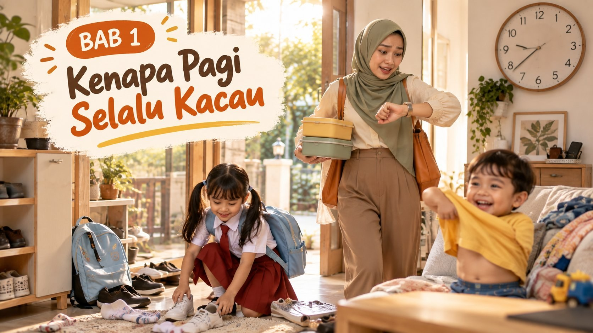
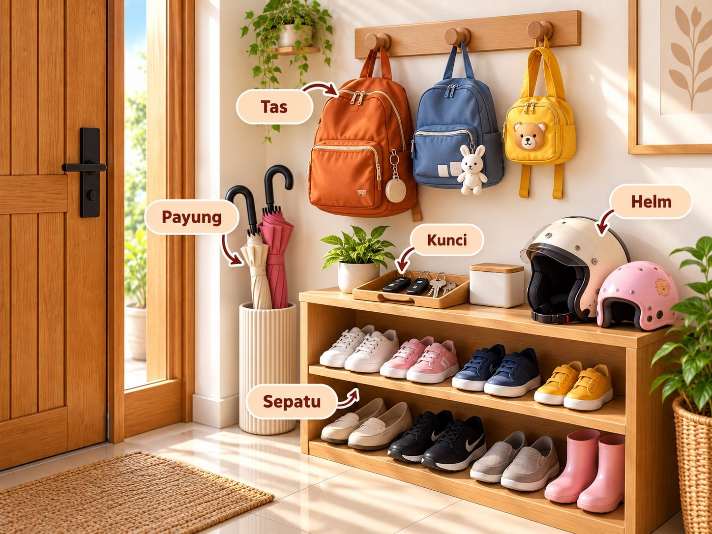
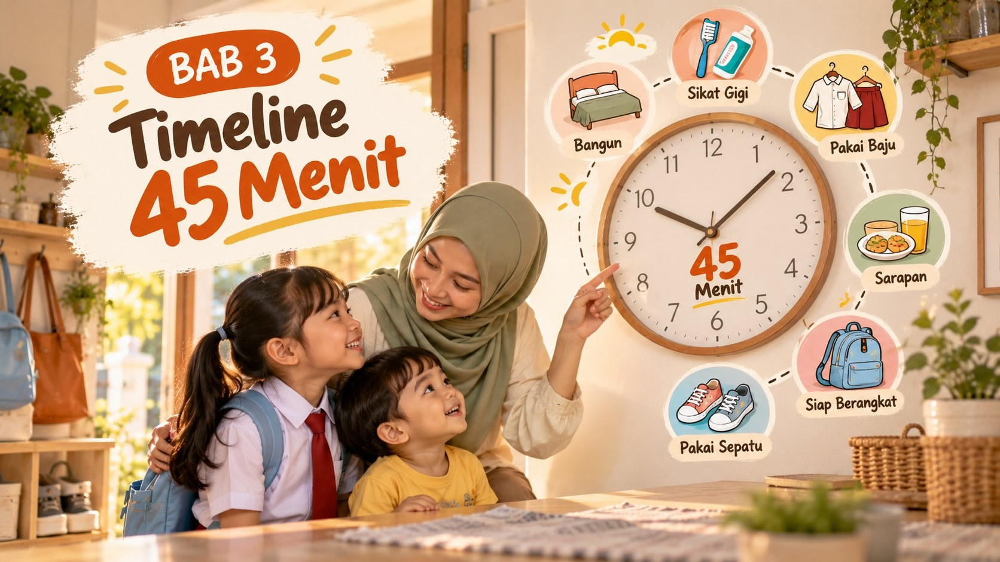
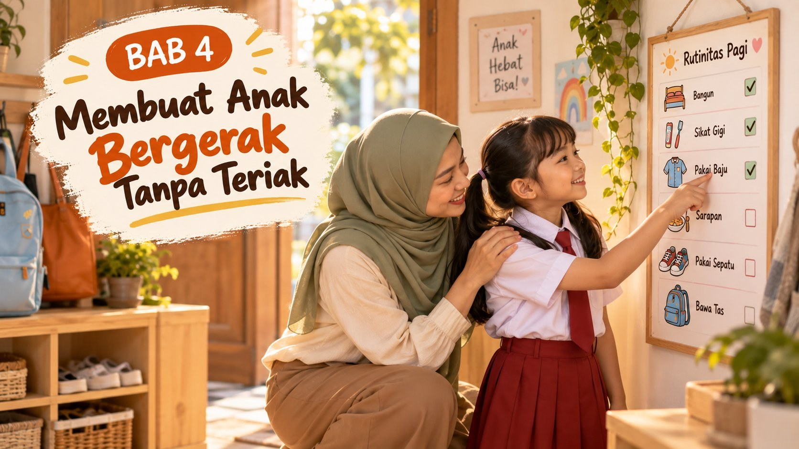
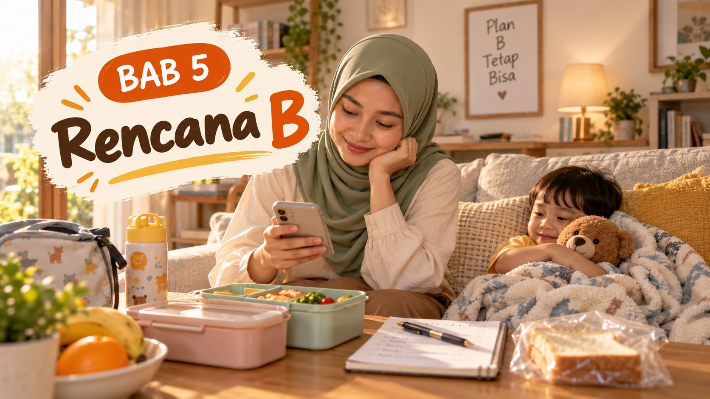
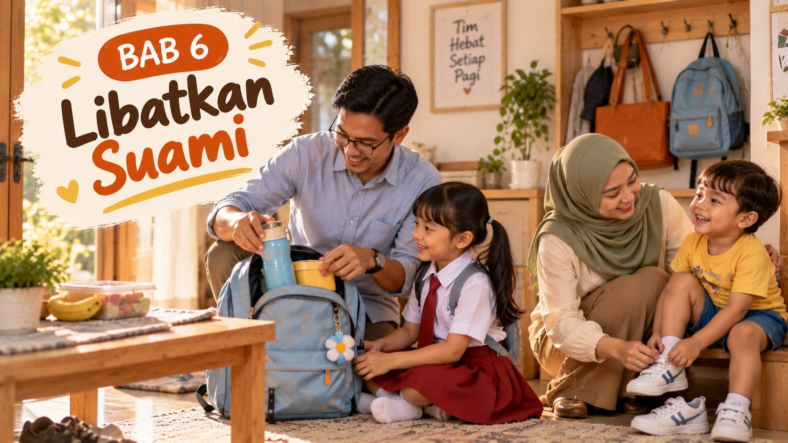
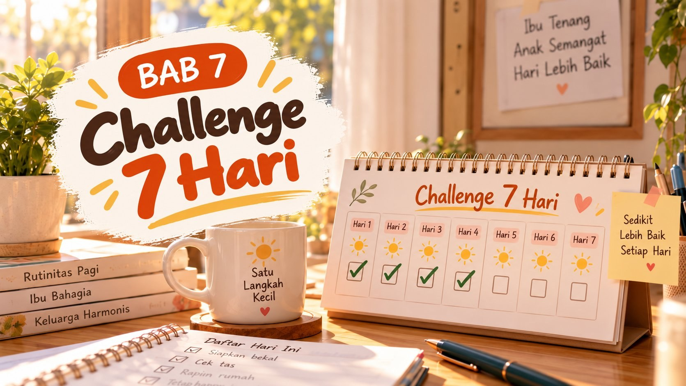
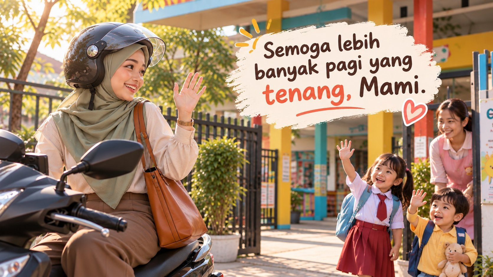
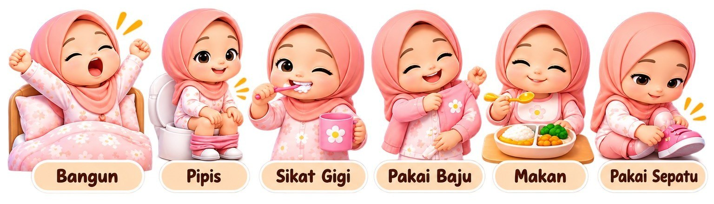
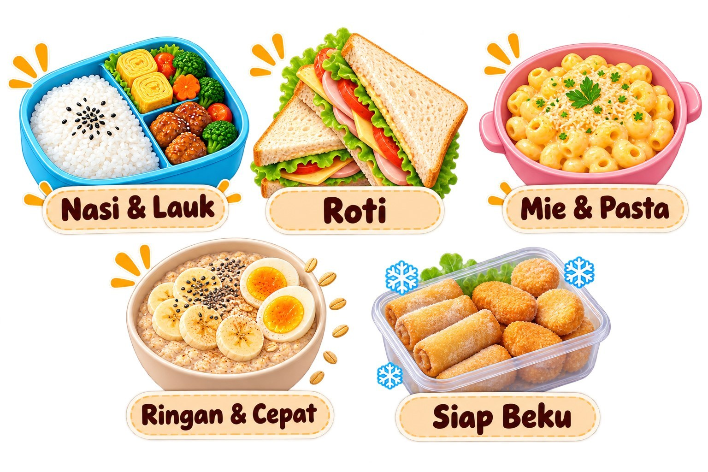

Terima kasih sudah membeli Pagi Tanpa Drama langsung dari ToolkitParenting. File ini adalah produk digital original dan dilisensikan untuk penggunaan pribadi pembeli.
Isi, desain, dan ilustrasi di dalam workbook ini dilindungi Undang-Undang Nomor 28 Tahun 2014 tentang Hak Cipta.
Kalau ada teman yang tertarik, arahkan saja untuk membeli versi originalnya. Setiap pembelian membantu kami terus membuat alat bantu praktis untuk orang tua Indonesia.
Mendapatkan file ini bukan dari ToolkitParenting? Kemungkinan itu salinan tidak resmi.
© 2026 ToolkitParenting. Hak cipta dilindungi.
Kalau kamu membuka buku ini, kemungkinan besar pagimu sedang tidak mudah.
Bangun paling awal, mengurus anak, menyiapkan sarapan dan bekal, bersiap kerja, lalu berangkat sambil berharap tidak telat. Dan sering kali, di tengah semua itu, ada suara yang naik, ada anak yang menangis, dan ada rasa bersalah yang ikut terbawa sampai kantor.
Buku ini ditulis untuk ibu yang bekerja dan juga memegang banyak urusan rumah. Isinya bukan teori panjang, dan bukan nasihat untuk jadi ibu yang lebih sabar. Isinya adalah sistem sederhana yang bisa diulang: apa yang disiapkan malam hari, urutan pagi yang jelas, cara menggerakkan anak tanpa harus terus mengulang instruksi, dan rencana cadangan untuk hari-hari yang meleset.
Buku ini tidak menjanjikan pagi yang sempurna. Anak tetap akan ada hari rewelnya. Alarm tetap bisa terlewat. Yang kita bangun adalah pagi yang lebih teratur, dan cara untuk kembali ke jalur setelah hari yang berantakan.
Kamu tidak perlu mengubah semuanya sekaligus. Satu perbaikan kecil yang berjalan sudah merupakan kemajuan.
Siap? Ambil pulpen, dan mari mulai dari kuis.
Jawab jujur, berdasarkan pagi-pagi di dua minggu terakhir. Lingkari satu jawaban yang paling mendekati.
Hitung jawabanmu. Huruf yang paling banyak adalah tipe utama kekacauan pagimu. Kalau ada dua huruf yang sama banyak, berarti kamu punya dua tipe, dan itu sangat wajar.
| A | B | C | D | E |
|---|---|---|---|---|
Buku ini tidak menjanjikan pagi yang sempurna. Masih akan ada hari anak menangis karena kaus kakinya "rasanya aneh". Masih akan ada hari kamu telat.
Yang kita bangun adalah pagi yang lebih teratur, dengan sistem yang bisa diulang. Jadi saat ada hari yang berantakan, kamu tidak mulai dari nol lagi keesokan harinya. Target yang realistis: lebih banyak pagi yang lancar daripada yang kacau. Itu sudah kemenangan besar.
Tidak perlu membaca berurutan. Cari momen yang paling sering terjadi di rumahmu, lalu langsung buka bagiannya.
| Kalau pagimu terasa begini... | Langsung buka |
|---|---|
| Mengulang instruksi yang sama 3–5 kali sebelum anak bergerak | Bab 4 Chart Rutinitas • Bonus 1 |
| Jam 06.30 masih cari kaus kaki sebelah, kunci, botol minum | Bab 2 Stasiun Siap Berangkat |
| Jam 05.30 berdiri di depan kulkas, bingung bekal dan sarapan | Bab 2 Checklist Malam • Bonus 3 |
| Suara naik, lalu rasa bersalah ikut berangkat kerja | Bab 4 Skrip Pengganti Teriak |
| Jam sudah 06.45, anak belum mandi, kamu baru mulai bersiap | Bab 3 Timeline 45 Menit • Mami Siap Duluan |
| Dua anak beda usia, semuanya minta dibantu bersamaan | Bab 3 Timeline Dua Anak Beda Usia |
| Pengasuh/ART izin mendadak, atau anak kurang sehat pagi ini | Bab 5 Rencana B #2 dan #4 |
| Alarm terlewat, sisa waktu cuma 20 menit | Bab 5 Pagi Darurat 20 Menit |
| Semuanya mengandalkan kamu, suami mau bantu tapi bingung mulai dari mana | Bab 6 Satu Tugas Tetap untuk Suami |
| Mau mulai, tapi bingung dari mana | Bab 7 Challenge 7 Hari |
Lingkari satu baris yang paling sering terjadi di pagimu. Buka bagiannya malam ini, kerjakan Aksi Hari Ini di akhir bab, lalu lanjut ke bab berikutnya kalau sudah terasa ringan.

Jam 06.10. Kamu sudah bangun dari setengah enam, tapi entah kenapa jam 06.50 kamu masih mencari kaus kaki sebelah, si kecil belum mau pakai baju, bekal belum ditutup, dan suaramu sudah naik satu oktaf.
Lalu di motor atau di mobil, kamu diam. Ada rasa bersalah yang ikut berangkat kerja bareng kamu.
Kalau itu terdengar familiar, Mami, kamu tidak sendirian. Dan yang lebih penting: pagi yang kacau hampir tidak pernah soal kamu kurang sabar atau kurang pintar mengatur. Biasanya soal sistem yang belum ada, atau sistem yang belum cocok dengan kondisi rumahmu.
Kabar baiknya, sistem bisa dibangun. Pelan-pelan, satu bagian demi satu bagian. Tapi sebelum membangun, kita perlu tahu dulu apa yang sebenarnya bikin pagimu berantakan. Karena solusi untuk pagi yang "telat bangun" beda dengan solusi untuk pagi yang "anaknya susah digerakkan".
Dari cerita banyak ibu bekerja, kekacauan pagi biasanya datang dari lima sumber ini. Sering kali lebih dari satu sekaligus.
Besok pagi, siapkan kertas kecil atau notes di HP. Tulis hanya tiga hal:
| Yang dicatat | Isianmu |
|---|---|
| Jam berapa kamu mulai bangun | |
| Jam berapa kalian benar-benar keluar rumah | |
| Satu momen yang paling bikin macet atau bikin suaramu naik |
Tidak perlu diperbaiki dulu. Cukup dicatat. Catatan ini akan kita pakai di Bab 3 saat menyusun timeline 45 menit versimu sendiri.
Ini mungkin bukan kabar yang Mami ingin dengar setelah seharian kerja: pagi yang lancar biasanya dimulai dari malam sebelumnya.
Tenang, bukan berarti kamu harus begadang menyiapkan semuanya. Yang kita butuhkan hanya 15 menit, di jam yang sama setiap malam, dengan urutan yang sama.
Kenapa malam? Karena di malam hari tidak ada jam yang mengejar. Keputusan kecil yang di pagi hari terasa berat ("baju apa?", "bekal apa?") di malam hari bisa diambil dengan kepala yang lebih tenang.
Prinsipnya sederhana: pindahkan sebanyak mungkin keputusan dan persiapan dari pagi ke malam. Pagi tinggal menjalankan, bukan memikirkan.
Pilih satu waktu yang paling masuk akal untuk rumahmu, lalu pakai terus:
Yang penting bukan jamnya, tapi konsistensinya. Kegiatan yang terikat pada momen tetap jauh lebih mudah dijalankan daripada "nanti kalau sempat."
Checklist ini dibagi dalam empat blok. Kerjakan berurutan. Kalau malam itu sangat capek, kerjakan Blok 1 dan 2 saja, itu sudah menyelamatkan sebagian besar pagimu.
Checklist ini juga tersedia dalam versi tempel kulkas di Bonus 2.
Minggu pertama, jangan kejar semuanya. Kalau selama ini kamu tidak punya rutinitas malam sama sekali, mulai dari Blok 1 dulu selama beberapa hari. Setelah terasa otomatis, tambahkan Blok 2, lalu seterusnya.
Putuskan menu sekali seminggu, bukan setiap malam. Blok 3 akan jauh lebih cepat kalau menu seminggu sudah ditentukan di akhir pekan. Bonus 3 berisi 30 ide sarapan dan bekal 5 menit yang bisa kamu rotasi.
Libatkan anak sesuai usianya. Anak 3–4 tahun bisa memilih satu dari dua baju yang kamu tawarkan. Anak 6 tahun ke atas bisa menyiapkan tas dan bajunya sendiri, lalu kamu cukup mengecek.
Kalau terlewat semalam, tidak apa-apa. Besok malam mulai lagi. Sistem ini tidak rusak hanya karena satu malam bolong.
Ingat sumber kekacauan nomor 2 di Bab 1: barang yang tidak ada di tempatnya? Solusinya adalah satu titik tetap di dekat pintu keluar, tempat semua barang untuk berangkat "tinggal".
Aturannya satu: apa pun yang dibawa keluar rumah besok pagi, malam ini sudah ada di stasiun. Pagi hari, kamu dan anak cukup mengambil dari satu tempat, lalu berangkat.

Isi stasiun biasanya: tas sekolah/daycare anak, tas kerjamu, sepatu semua orang yang berangkat, kunci kendaraan atau rumah, helm atau jaket (kalau naik motor), payung, dan barang khusus besok (surat izin, uang kas, kotak prakarya).
Tidak perlu beli apa-apa. Stasiun bisa berupa satu rak sepatu dengan baki di atasnya, beberapa gantungan di dinding dekat pintu (satu per orang), keranjang plastik (satu per orang), atau ujung meja yang sengaja dikosongkan khusus untuk ini.
Kebiasaan pendukung: saat pulang kerja atau pulang sekolah, barang langsung kembali ke stasiun, bukan ke sofa atau meja makan. Ini butuh waktu untuk jadi kebiasaan, jadi ingatkan dengan santai selama beberapa minggu pertama.
Selain stasiun di dekat pintu, siapkan juga satu tempat khusus untuk baju besok: gantungan di balik pintu kamar, satu keranjang kecil per anak, atau satu kursi di kamar. Anak yang masih kecil biasanya lebih semangat kalau tempatnya "miliknya" sendiri, misalnya keranjang dengan stiker kesukaannya.
Ada malam-malam yang memang sudah penuh: anak rewel, pekerjaan dibawa pulang, atau kamu sudah terlalu lelah. Untuk malam seperti itu, pakai Versi 5 Menit:
Sisanya bisa dikerjakan besok pagi dengan versi darurat di Bab 5. Lima menit lebih baik daripada tidak sama sekali.
| Yang ditentukan | Isianmu |
|---|---|
| Lokasi Stasiun Siap Berangkat | |
| Lokasi tempat baju untuk besok | |
| Waktu tetap untuk checklist malam |
Tidak perlu sempurna. Pakai tempat dan wadah yang ada di rumah. Besok pagi, perhatikan: berapa kali kamu mencari barang dibanding biasanya?

Di Bab 1 kamu sudah mencatat satu pagi apa adanya. Di Bab 2 kamu sudah memindahkan sebagian persiapan ke malam hari. Sekarang saatnya menyusun urutan pagi yang tetap, supaya setiap pagi tidak lagi terasa seperti hari pertama.
Dulu mungkin pagimu berjalan seperti ini: bangun, lalu mengerjakan apa pun yang paling mendesak saat itu. Masalahnya, di pagi hari semuanya terasa mendesak. Timeline mengubah itu. Kamu tidak perlu lagi berpikir "sekarang apa?" karena jawabannya sudah tertulis.
Agar jelas sejak awal: 45 menit dihitung dari anak dibangunkan sampai kalian keluar rumah. Bagian inilah yang paling sering kacau. Sebelum anak bangun, kamu masih bisa bergerak sesuai ritmemu sendiri. Waktu sebelum itu adalah waktumu sendiri untuk bersiap, beribadah, atau memasak.
45 menit juga bukan angka keramat. Kalau anakmu butuh waktu lebih lama, atau rumahmu jauh dari sekolah, silakan sesuaikan jadi 50 atau 60 menit. Yang penting adalah urutannya tetap dan waktunya cukup, bukan secepat-cepatnya.
Kalau hanya ada satu hal yang kamu ambil dari bab ini, ambillah yang ini: sebelum anak dibangunkan, kamu sudah mandi, sudah berpakaian kerja, dan tasmu sudah di stasiun.
Coba ingat pagi-pagi yang paling kacau. Sering kali saat anak sudah siap, kamu baru mulai berdandan, dan anak yang menunggu mulai bermain, menumpahkan sesuatu, atau membuka lagi sepatunya. Saat kamu siap duluan, seluruh perhatianmu di 45 menit itu bisa untuk anak. Dan anak biasanya lebih mudah digerakkan oleh orang tua yang tenang daripada yang sedang terburu-buru.
| Sebaiknya selesai sebelum anak bangun | Boleh ditunda sampai anak siap |
|---|---|
| Mandi Berpakaian kerja Sarapan & bekal sudah dimasak atau di atas kompor Tasmu sudah di stasiun | Memakai sepatu Riasan wajah terakhir Jaket atau kerudung luar |
Balita biasanya belum bisa banyak mengurus diri sendiri, dan transisinya lambat. Karena itu timeline ini memberi jeda lebih panjang di setiap langkah.
| Menit | Contoh jam | Kegiatan |
|---|---|---|
| -30 s/d 0 | 05.45–06.15 | Waktu Mami: mandi, berpakaian, siapkan sarapan & bekal |
| 0 | 06.15 | Bangunkan anak dengan pelan, beri waktu 3–5 menit untuk "mengumpulkan nyawa" |
| 5 | 06.20 | Ke kamar mandi: pipis, cuci muka atau mandi, sikat gigi |
| 15 | 06.30 | Pakai baju (sudah disiapkan semalam) |
| 22 | 06.37 | Sarapan |
| 35 | 06.50 | Cuci tangan, isi botol minum, masukkan bekal ke tas |
| 40 | 06.55 | Pakai sepatu, ambil tas dari stasiun |
| 45 | 07.00 | Berangkat |
Anak SD sudah bisa mengerjakan banyak langkah sendiri. Peranmu bergeser dari "mengerjakan" ke "mengecek".
| Menit | Contoh jam | Kegiatan |
|---|---|---|
| -30 s/d 0 | 05.30–06.00 | Waktu Mami: mandi, berpakaian, siapkan sarapan & bekal |
| 0 | 06.00 | Bangunkan anak |
| 3 | 06.03 | Anak ke kamar mandi: mandi, sikat gigi |
| 13 | 06.13 | Anak pakai seragam sendiri |
| 20 | 06.20 | Sarapan bersama |
| 32 | 06.32 | Anak cek tas sendiri pakai chart (Bab 4), isi botol minum |
| 38 | 06.38 | Pakai sepatu, ambil tas dari stasiun |
| 42 | 06.42 | Cadangan 3 menit untuk yang lupa atau meleset |
| 45 | 06.45 | Berangkat |
Kuncinya adalah berselang, bukan bersamaan. Anak yang lebih lambat (biasanya yang lebih kecil) dibangunkan belakangan, supaya kamu tidak mengurus dua anak di langkah yang sama. Contoh: kakak kelas 3 SD, adik 3 tahun.
| Menit | Jam | Kakak (SD) | Adik (Balita) |
|---|---|---|---|
| -30 s/d 0 | 05.30–06.00 | Masih tidur | Masih tidur |
| 0 | 06.00 | Dibangunkan | Masih tidur |
| 3 | 06.03 | Mandi, sikat gigi (mandiri) | Masih tidur |
| 10 | 06.10 | Pakai seragam (mandiri) | Dibangunkan pelan |
| 15 | 06.15 | Mulai sarapan | Ke kamar mandi (dibantu Mami) |
| 25 | 06.25 | Cek tas pakai chart | Pakai baju (dibantu Mami) |
| 30 | 06.30 | Selesai sarapan, isi botol minum | Sarapan |
| 38 | 06.38 | Pakai sepatu | Pakai sepatu (dibantu Mami) |
| 42 | 06.42 | Cadangan | Cadangan |
| 45 | 06.45 | Berangkat | Berangkat |
Kenapa pola ini berhasil: saat kakak mengerjakan langkah mandiri, perhatianmu penuh untuk adik, dan kamu tidak perlu membantu dua anak di kamar mandi bersamaan. Kakak yang sudah siap bisa diberi tugas kecil, misalnya mengambilkan sepatu adik dari stasiun, tapi jangan jadikan kakak "pengasuh" tetap.
Kalau anak-anakmu dua-duanya balita, bangunkan yang paling lama "mengumpulkan nyawa" lebih dulu. Kalau dua-duanya SD, mereka bisa berjalan bersamaan dengan versi SD, cukup bagi giliran kamar mandi.
Ada pengasuh atau keluarga lain yang membantu? Tuliskan siapa mengerjakan apa di kolom tersendiri, supaya tidak ada yang saling menunggu. Soal pembagian tugas dengan suami, kita bahas di Bab 6.
Pakai catatan pagi yang kamu buat di akhir Bab 1.
| Menit | Jam | Mami | Anak 1 | Anak 2 |
|---|---|---|---|---|
| Mami bangun | ||||
| 0 | ||||
| Cadangan | ||||
| Berangkat |
Setelah jadi, tempel timeline ini di tempat yang sering kamu lihat di pagi hari, misalnya pintu kulkas atau dekat cermin kamar mandi.
Timeline yang baru dibuat hampir tidak pernah langsung cocok. Itu bukan tanda gagal, itu data. Setiap sore di minggu pertama, tanyakan satu hal: "Langkah mana yang tadi pagi paling molor?" Lalu tambahkan waktu di langkah itu. Biasanya setelah satu sampai dua minggu, timeline mulai terasa pas dengan ritme rumahmu.
Besok sore, isi catatan singkat ini:
| Yang dicek | Isianmu |
|---|---|
| Apakah Mami sudah siap sebelum anak dibangunkan? | Ya / Belum |
| Jam berangkat sebenarnya | |
| Langkah yang paling molor | |
| Perubahan kecil untuk lusa |
Satu kali percobaan sudah cukup untuk hari ini. Perbaikannya pelan-pelan.

Mari jujur sebentar, Mami. Hampir semua ibu pernah berteriak di pagi hari. Bukan karena tidak sayang, tapi karena jam terus berjalan, anak masih duduk memandangi satu kaus kaki, dan instruksi yang sama sudah diulang empat kali.
Bab ini tidak akan menghakimi teriakan itu. Yang kita lakukan adalah mengurangi momen yang membuat kamu merasa harus berteriak, dengan tiga alat: chart rutinitas, skrip pengganti teriak, dan trik transisi. Tujuannya pelan-pelan memindahkan "tombol" dari suaramu ke sistem yang bisa anak lihat dan ikuti sendiri.
Di pagi hari, anak menerima banyak sekali kalimat: "ayo bangun", "cepat mandi", "bajunya dipakai", "jangan main dulu", "sepatunya mana". Semuanya lewat suara, semuanya terdengar mirip. Bagi anak, terutama yang masih kecil, deretan kalimat seperti ini mudah lewat begitu saja. Bukan karena mereka nakal, tapi karena mereka belum terbiasa menyimpan urutan panjang di kepala sambil setengah mengantuk. Makanya alat pertama kita adalah sesuatu yang bisa dilihat.
Chart rutinitas adalah daftar langkah pagi anak, ditempel di tempat yang mudah dilihat, dengan urutan yang sama dengan timeline di Bab 3. Pertanyaan "habis ini apa, Ma?" sekarang bisa dijawab anak sendiri dengan melihat chart.
Versi balita (2–5 tahun): bergambar. Balita belum bisa membaca, jadi setiap langkah diwakili gambar. Cukup 5–6 langkah.
Versi anak SD (6–10 tahun): checklist. Anak SD bisa membaca dan mencentang sendiri: bangun dan rapikan selimut, mandi, sikat gigi, pakai seragam lengkap, sarapan, taruh piring di tempat cuci, cek tas, pakai sepatu, siap di pintu. Kedua versi tersedia siap cetak di Bonus 1.
Cara mengenalkannya: hari pertama sampai ketiga, jalani chart bersama anak. Tunjuk langkahnya, kerjakan bersama, tandai bersama. Setelah itu, ganti instruksimu dengan pertanyaan: "Di chart, habis ini apa?" Pelan-pelan, anak yang akan membaca sendiri tanpa ditanya.
Teriakan sering muncul karena di momen genting kita tidak punya kalimat lain yang siap dipakai. Skrip adalah kalimat pendek yang sudah disiapkan sebelumnya. Pilih 2–3 yang paling cocok dengan situasi di rumahmu.
Yang terakhir ini sering jauh lebih efektif daripada teriakan dari ruangan lain, karena anak benar-benar menyadari kamu sedang bicara padanya.
Tidak apa-apa bilang begitu di depan anak. Anak juga belajar bahwa orang dewasa pun kadang perlu jeda.
Itu akan terjadi, dan tidak menghapus semua usahamu. Setelah suasana tenang, cukup bilang: "Tadi Mami suaranya keras ya. Mami minta maaf. Besok kita coba lagi bareng." Lalu lanjutkan. Tidak perlu berlarut-larut menyalahkan diri.
Pagi hari penuh perpindahan: dari tidur ke bangun, dari kamar ke kamar mandi, dari main ke makan, dari rumah ke luar. Banyak momen macet terjadi tepat di perpindahan ini.
Tidak semua trik cocok untuk semua anak. Coba satu per satu, lihat reaksinya, lalu simpan yang berhasil. Konsisten lebih penting daripada banyak trik. Satu chart yang dipakai setiap hari jauh lebih berguna daripada lima trik yang ganti-ganti. Hasilnya bertahap. Yang kita cari adalah kecenderungan yang membaik dari minggu ke minggu, bukan perubahan dalam semalam.
| Yang ditentukan | Isianmu |
|---|---|
| Versi chart (balita / SD) | |
| Lokasi chart ditempel | |
| Cara anak menandai langkah | |
| Skrip pilihan 1 | |
| Skrip pilihan 2 | |
| Trik transisi yang mau dicoba |
Tulis dua skrip pilihanmu di kertas kecil dan tempel di dekat timeline. Di momen genting, kalimat yang tertulis jauh lebih mudah diingat daripada yang hanya ada di kepala.

Sejauh ini kita sudah membangun pagi yang "normal". Tapi pagi yang normal tidak datang setiap hari. Ada pagi ketika anak bangun dengan suasana hati yang buruk. Ada pagi ketika alarm tidak berbunyi. Ada pagi ketika pesan WhatsApp dari pengasuh masuk jam 5.30: "Bu, maaf hari ini saya tidak bisa datang."
Tujuan bab ini bukan mencegah semua gangguan, karena itu mustahil. Tujuannya adalah punya langkah yang sudah diputuskan sebelumnya, supaya saat gangguan datang, kamu tidak perlu berpikir dari nol di tengah kepanikan.
Sebaiknya dihindari: membandingkan dengan saudara atau anak lain, dan memulai "pelajaran" tentang sikap di tengah pagi yang sempit. Simpan untuk sore atau malam saat semua sudah tenang.
Bab ini tidak membahas cara menilai atau mengobati kondisi anak. Untuk itu, ikuti arahan dokter atau tenaga kesehatan yang biasa menangani anakmu. Yang kita siapkan di sini adalah sisi logistiknya.
Di pagi harinya: putuskan masuk atau tidak, berdasarkan aturan sekolah dan arahan tenaga kesehatan. Kalau tidak masuk, kabari sekolah, kantor, dan atur pendamping. Kalau masuk, selipkan kebutuhan tambahan di tas (tisu, baju ganti, botol minum lebih besar) dan kabari guru.
Simpan kedua template ini di notes HP supaya tinggal diubah sedikit dan dikirim.
Mencegah terulang: kalau telat karena tidur terlalu malam, majukan jam checklist malam. Pasang dua alarm di dua perangkat berbeda. Letakkan alarm agak jauh dari tempat tidur, supaya harus berdiri untuk mematikannya.
Bagi banyak ibu bekerja, ini salah satu pagi yang paling bikin panik, karena bukan hanya pagi yang terganggu, tapi seluruh hari. Siapkan Daftar Pendamping Cadangan sekarang:
| No | Nama / tempat | Nomor HP | Catatan (jam bisa, jarak, syarat) |
|---|---|---|---|
| 1 | |||
| 2 | |||
| 3 |
Pilihan yang bisa dipertimbangkan: orang tua atau mertua, saudara, tetangga yang dipercaya, daycare yang menerima penitipan harian, atau pengasuh panggilan yang sudah dikenal. Cara terbaik adalah menghubungi mereka sekarang, saat tidak darurat. Permintaan mendadak di jam 6 pagi lebih mudah diterima kalau sebelumnya sudah dibicarakan.
Di pagi harinya: hubungi pendamping cadangan sesuai urutan. Kalau tidak ada yang bisa, bicarakan dengan suami siapa yang izin atau bekerja dari rumah (Bab 6). Kabari kantor secepatnya.
Versi paling ringkas dari timeline Bab 3. Prinsipnya: hanya yang wajib, sisanya dilepas.
| Menit | Mami | Anak |
|---|---|---|
| 0 | Bangunkan anak sambil nyalakan lampu | Bangun |
| 2 | Cuci muka, sikat gigi, pakai baju kerja yang disiapkan semalam | Cuci muka, sikat gigi, pipis |
| 8 | Bantu anak pakai baju | Pakai baju (dibantu) |
| 12 | Ambil sarapan bawa (roti, buah, susu kotak), isi botol minum | Duduk, makan sesuatu yang cepat |
| 16 | Ambil tas dari stasiun, cek kunci | Pakai sepatu |
| 20 | Berangkat | Berangkat |
| Boleh dilepas | Harus tetap ada |
|---|---|
| Mandi pagi (ganti cuci muka & lap badan) Sarapan duduk di meja Bekal masak (ganti bekal praktis) Riasan lengkap Merapikan tempat tidur dan rumah | Semua orang berpakaian layak Tas lengkap Anak sudah makan atau membawa makanan Kunci dan dompet terbawa |
Pagi Darurat 20 Menit hanya bisa berjalan kalau checklist malam sudah dilakukan. Tanpa baju dan tas yang siap di tempatnya, 20 menit hampir mustahil.
Rencana B tidak selalu berhasil sempurna. Saat itu terjadi, ingat: satu pagi yang berantakan tidak membatalkan sistemmu. Malam nanti, jalankan lagi checklist malam. Besok pagi, kembali ke timeline normal. Kalau mau, sore harinya tanyakan: "Apa satu hal yang bisa disiapkan supaya pagi seperti tadi lebih ringan lain kali?"
| Kalau yang terjadi... | Langkah pertama |
|---|---|
| Anak rewel | Turunkan target, pangkas langkah, beri pilihan kecil |
| Anak kurang sehat | Ikuti arahan tenaga kesehatan • kabari sekolah & kantor pakai template • hubungi pendamping cadangan |
| Telat bangun | Cek sisa menit • langsung Pagi Darurat 20 Menit • kabari lebih awal |
| Pengasuh/ART izin | Hubungi Daftar Pendamping Cadangan sesuai urutan • bicarakan izin/WFH dengan suami • kabari kantor |
Semua ini dikerjakan saat pagi sedang tenang, supaya saat pagi tidak tenang, kamu tinggal menjalankan.

Sampai bab ini, sebagian besar sistem memang dijalankan oleh Mami. Tapi pagi di rumah bukan urusan satu orang. Kalau ada suami di rumah pada pagi hari, sistem ini akan jauh lebih ringan kalau dijalankan berdua.
Bab ini bukan tentang siapa yang lebih banyak mengerjakan, dan bukan tentang mencari siapa yang kurang. Banyak suami sebenarnya mau membantu, tapi tidak tahu harus mulai dari mana. Yang sering hilang bukan niatnya, tapi kejelasannya. Pendekatan kita sederhana: satu tugas tetap, yang jelas, dan dikerjakan setiap hari.
Kalimat "tolong bantu-bantu ya pagi ini" terdengar wajar, tapi sulit dijalankan. Bantu apa? Mulai jam berapa? Akibatnya, Mami tetap jadi "remote control", hanya saja sekarang untuk dua orang. Satu tugas tetap itu jelas (tahu persis bagiannya), utuh (tanggung jawab dari awal sampai selesai), dan bisa jadi kebiasaan (sama setiap hari). Satu tugas yang benar-benar lepas dari pikiranmu bisa terasa sangat berbeda dibanding banyak bantuan yang masih harus kamu arahkan.
Pilih tugas yang cocok dengan jam dan kebiasaan suami, bukan yang menurut Mami paling berat.
| Kalau suami... | Pilihan tugas |
|---|---|
| Bangun lebih awal | Membangunkan anak dan menemani di kamar mandi • Menyiapkan sarapan • Mengisi botol minum dan memasukkan bekal ke tas |
| Berangkat bersamaan | Memakaikan baju dan sepatu anak • Mengecek tas anak pakai chart • Memanaskan kendaraan dan memastikan barang dari stasiun terbawa |
| Berangkat lebih siang | Mengantar anak ke sekolah/daycare • Merapikan meja makan dan dapur setelah semua berangkat |
| Berangkat lebih pagi | Tugas malam: Blok 2 checklist malam atau menyiapkan baju anak • Memasang alarm dan memastikan pintu terkunci |
Satu tugas dulu. Setelah berjalan lancar beberapa minggu, baru bicarakan kalau mau menambah.
Pilih waktu yang tenang. Bukan di tengah pagi yang kacau, bukan saat salah satu baru pulang kerja. Akhir pekan atau malam setelah anak tidur biasanya lebih pas.
Mulai dari tujuan bersama, bukan dari keluhan.
Tunjukkan sistemnya. Perlihatkan timeline Bab 3 dan chart Bab 4, supaya suami mudah melihat di mana bagiannya. Tawarkan pilihan. "Dari yang ini, mana yang paling cocok sama jadwalmu?" Tugas yang dipilih sendiri biasanya lebih dijalankan.
Sepakati standar yang wajar. Cara suami mengerjakan mungkin berbeda. Selama tujuannya tercapai, coba biarkan. Kalau setiap hasil dikoreksi, tugas itu pelan-pelan kembali ke tanganmu lagi.
Minta masukan juga. "Menurutmu, bagian mana dari pagi kita yang paling bikin repot?" Kadang suami melihat hal yang tidak kamu lihat.
Isi bersama. Yang penting setiap baris punya satu nama yang jelas.
| Tugas | Mami | Suami | Anak | Lainnya |
|---|---|---|---|---|
| Malam sebelumnya | ||||
| Siapkan baju anak | ||||
| Siapkan tas & isi stasiun | ||||
| Putuskan & siapkan bahan sarapan/bekal | ||||
| Pasang alarm & cek pintu | ||||
| Pagi hari | ||||
| Bangunkan anak | ||||
| Dampingi anak di kamar mandi | ||||
| Pakaikan/cek baju anak | ||||
| Siapkan sarapan | ||||
| Siapkan bekal & botol minum | ||||
| Cek tas pakai chart | ||||
| Siapkan kendaraan | ||||
| Antar anak | ||||
| Kalau ada gangguan (Bab 5) | ||||
| Yang izin/WFH kalau anak sakit | ||||
| Yang menghubungi pendamping cadangan | ||||
Tugas tetap suami (satu kalimat): ________________________________________________
Kalau suami bekerja di luar kota, shift malam, atau memang tidak ada di rumah saat pagi, bab ini tetap bisa dipakai.
Sistem ini tetap bekerja. Pembagiannya saja yang menyesuaikan.
Setelah satu atau dua minggu, luangkan lima belas menit untuk mengobrol: apa yang sudah terasa lebih ringan, bagian mana yang masih sering macet, dan apakah ada tugas yang perlu ditukar. Jangan lupa bilang terima kasih. Kalimat sederhana seperti "Pagi ini enak banget karena kamu yang pegang sarapan" membantu kebiasaan baru terasa dihargai, dan lebih mungkin bertahan.
| Yang ditentukan | Isianmu |
|---|---|
| Waktu mengobrol | |
| Tugas tetap suami | |
| Mulai berlaku tanggal | |
| Tanggal cek bersama (1–2 minggu lagi) |
Satu tugas, jelas, dan disepakati berdua. Itu sudah cukup untuk memulai.

Mami sudah membaca enam bab. Mungkin sebagian sudah kamu coba, mungkin sebagian masih tersimpan di kepala. Keduanya tidak apa-apa. Bab terakhir ini merangkum semuanya jadi satu tantangan sederhana: satu perbaikan per hari, selama tujuh hari.
Mengubah seluruh pagi sekaligus hampir selalu terasa berat, lalu berhenti di hari ketiga. Satu perbaikan kecil yang berhasil setiap hari jauh lebih mungkin bertahan.
Perhatikan besok: apakah pagi terasa lebih cepat tanpa memilih baju?
Perhatikan besok: berapa kali terdengar "ada yang lihat ... nggak?"
Perhatikan besok: apakah perhatianmu terasa lebih utuh untuk anak?
Perhatikan besok: berapa kali kamu perlu mengulang instruksi?
Kenapa di hari terakhir? Karena setelah enam hari, kamu sudah punya sistem nyata untuk ditunjukkan, bukan hanya rencana.
Isi setiap sore atau malam. Versi siap cetak tersedia di Bonus 4. Setelah hari ketujuh, bandingkan dengan catatan pagi pertamamu di Bab 1.
| Yang ditentukan | Isianmu |
|---|---|
| Tanggal mulai Hari 1 | |
| Waktu mengisi tracker setiap hari | |
| Tanggal evaluasi bulanan pertama |
Satu tanggal. Itu langkah pertamanya.

Mami, pagi yang kamu jalani setiap hari adalah pekerjaan yang jarang terlihat. Tidak ada yang memberi nilai untuk bekal yang sudah siap, anak yang berangkat dengan baju lengkap, atau kamu yang tiba di kantor tepat waktu setelah mengurus semuanya.
Buku ini tidak menjanjikan pagi yang sempurna. Akan tetap ada hari yang berantakan, anak yang rewel, dan alarm yang terlewat. Yang kamu punya sekarang adalah sistem yang bisa diulang, dan cara untuk kembali ke jalur setelah hari yang sulit.
Workbook ini hanya akan bekerja kalau dikerjakan, bukan hanya dibaca.
Kita semua pernah begitu: beli planner, semangat di hari pertama, lalu filenya tenggelam di folder Download. Atau sudah dicetak rapi, lalu tersimpan di laci dan tidak pernah disentuh lagi. Buku ini dibuat supaya tidak bernasib sama.
Kamu tidak perlu mengerjakan semuanya. Tapi kerjakan sesuatu, dan mulailah malam ini:
Tidak apa-apa kalau tulisannya berantakan, tabelnya dicoret-coret, atau checklist-nya bolong di beberapa malam. Workbook yang penuh coretan justru tanda sedang dipakai.
| Yang akan aku lakukan | Kapan |
|---|---|
| Halaman pertama yang aku cetak | |
| Aksi pertama yang aku kerjakan | |
| Tanggal mulai Challenge 7 Hari |
Satu langkah kecil yang dikerjakan jauh lebih berarti daripada seluruh buku yang hanya disimpan.
Semoga lebih banyak pagi di rumahmu yang berjalan tenang. Dan semoga di perjalanan berangkat kerja, yang ikut bersamamu bukan lagi rasa bersalah, tapi sedikit lega.
Empat lembar yang bisa kamu cetak dan pakai langsung.
| # | Printable |
|---|---|
| 1 | Chart Rutinitas Pagi Anak (balita & SD) |
| 2 | Checklist Malam 15 Menit (tempel kulkas) |
| 3 | 30 Ide Sarapan dan Bekal 5 Menit |
| 4 | Tracker Challenge 7 Hari |
Cetak, tempel sejajar mata anak. Pilih satu versi. Jepit jepitan jemuran di bawah tiap gambar, lalu pindahkan ke kotak "Sudah" setiap langkah selesai.
| Bangun | Pipis | Sikat Gigi | Pakai Baju | Makan | Pakai Sepatu |
|---|---|---|---|---|---|
| Sudah | Sudah | Sudah | Sudah | Sudah | Sudah |

| Bangun | Pipis | Sikat Gigi | Pakai Baju | Makan | Pakai Sepatu |
|---|---|---|---|---|---|
| Sudah | Sudah | Sudah | Sudah | Sudah | Sudah |
Hore, aku siap berangkat!
Laminating dulu, lalu centang pakai spidol yang bisa dihapus.
| Langkah | Sen | Sel | Rab | Kam | Jum |
|---|---|---|---|---|---|
| Bangun & rapikan selimut | |||||
| Mandi | |||||
| Sikat gigi | |||||
| Pakai seragam lengkap | |||||
| Sarapan | |||||
| Taruh piring di tempat cuci | |||||
| Cek tas: buku, PR, botol minum, bekal | |||||
| Pakai sepatu | |||||
| Siap di pintu |
Semua tercentang = aku keren hari ini!
| Langkah | Sen | Sel | Rab | Kam | Jum |
|---|---|---|---|---|---|
"5 menit" adalah waktu di pagi hari, dengan asumsi bahan sudah disiapkan malam sebelumnya. Pilih 5–7 ide untuk dirotasi setiap minggu. Sesuaikan dengan selera, usia, dan kebutuhan makan anakmu.

| No | Menu | Siapkan malam | Pagi hari |
|---|---|---|---|
| 1 | Nasi telur dadar gulung | Kocok telur + daun bawang, simpan di kulkas | Dadar, gulung, potong |
| 2 | Nasi kepal isi abon | Siapkan nasi dan abon | Kepal, isi, bungkus plastik |
| 3 | Nasi goreng sederhana | Siapkan nasi dan bumbu | Tumis 3–4 menit |
| 4 | Nasi + nugget/sosis | Siapkan nasi | Goreng/panggang nugget |
| 5 | Nasi + telur ceplok kecap | Siapkan nasi | Ceplok telur, beri kecap |
| 6 | Nasi + ayam suwir | Suwir ayam masak dari sore | Panaskan, tata di kotak |
| 7 | Nasi + tempe/tahu bacem | Bacem akhir pekan, simpan di kulkas | Goreng sebentar |
| 8 | Onigiri tuna mayo | Campur tuna + mayo | Bentuk nasi, isi, bungkus |
| No | Menu | Siapkan malam | Pagi hari |
|---|---|---|---|
| 9 | Roti selai kacang + pisang | Tidak perlu | Oles, iris pisang, tangkupkan |
| 10 | Roti telur | Kocok telur | Celup roti, panggang di teflon |
| 11 | Sandwich keju + ham/smoked beef | Tidak perlu | Susun, tangkupkan, potong |
| 12 | Roti gulung sosis | Siapkan sosis | Gulung, panggang sebentar |
| 13 | Roti bakar cokelat/keju | Tidak perlu | Oles, panggang di teflon |
| 14 | Roti isi telur orak-arik | Tidak perlu | Orak-arik, isi ke roti |
| No | Menu | Siapkan malam | Pagi hari |
|---|---|---|---|
| 15 | Makaroni keju | Rebus makaroni, simpan di kulkas | Panaskan dengan susu + keju |
| 16 | Spageti saus bolognese | Saus dari akhir pekan, rebus spageti | Panaskan, campur |
| 17 | Bihun goreng | Rendam bihun, siapkan bumbu | Tumis 3–4 menit |
| 18 | Mie telur rebus | Siapkan sayur yang sudah dipotong | Rebus mie + telur + sayur |
| No | Menu | Siapkan akhir pekan | Pagi hari |
|---|---|---|---|
| 27 | Risol/lumpia | Buat dan bekukan | Goreng/air fryer |
| 28 | Nugget ayam buatan sendiri | Buat dan bekukan | Goreng/panggang |
| 29 | Perkedel kentang | Buat dan bekukan | Goreng |
| 30 | Martabak telur mini | Buat dan bekukan | Goreng/panggang |
| No | Menu | Siapkan malam | Pagi hari |
|---|---|---|---|
| 19 | Oatmeal/overnight oats | Campur oat + susu, simpan di kulkas | Tambah buah, siap makan |
| 20 | Sereal + susu | Tidak perlu | Tuang |
| 21 | Pancake | Buat adonan, simpan di kulkas | Tuang, masak di teflon |
| 22 | Telur rebus + buah | Rebus telur, simpan di kulkas | Kupas, siapkan buah |
| 23 | Kentang rebus + telur | Rebus kentang | Panaskan, tambah telur |
| 24 | Jagung rebus | Rebus dari malam | Panaskan |
| 25 | Ubi/singkong kukus | Kukus dari malam | Panaskan |
| 26 | Bubur instan + topping | Siapkan topping | Seduh, beri topping |
| Hari | Sarapan | Bekal |
|---|---|---|
| Senin | ||
| Selasa | ||
| Rabu | ||
| Kamis | ||
| Jumat |
Tanggal mulai: ____________________
| Hari | Perbaikan | Jalan? | Jam berangkat | Suara naik (0 / 1–2 / 3+) | Pagi terasa | Catatan kecil |
|---|---|---|---|---|---|---|
| 1 | Siapkan baju malam | |||||
| 2 | Stasiun Siap Berangkat | |||||
| 3 | Mami siap duluan | |||||
| 4 | Jalankan timeline | |||||
| 5 | Chart rutinitas anak | |||||
| 6 | Siapkan Rencana B | |||||
| 7 | Satu tugas tetap suami |
Lingkari wajah yang paling menggambarkan pagimu hari itu.
| Pagi pertama (catatan Bab 1) | Hari ke-7 | |
|---|---|---|
| Jam bangun | ||
| Jam berangkat | ||
| Momen paling macet |